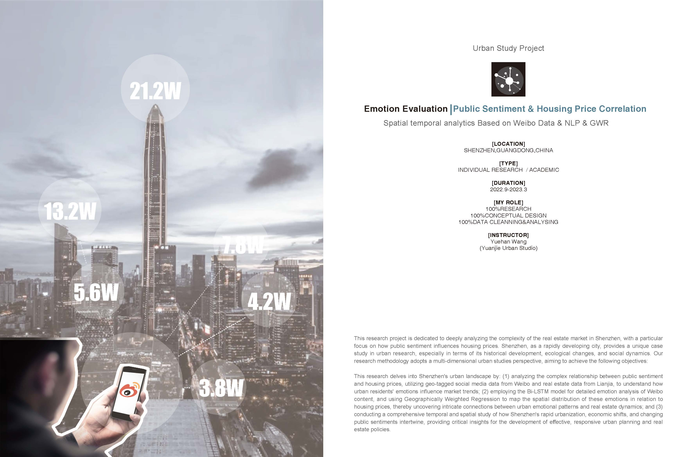
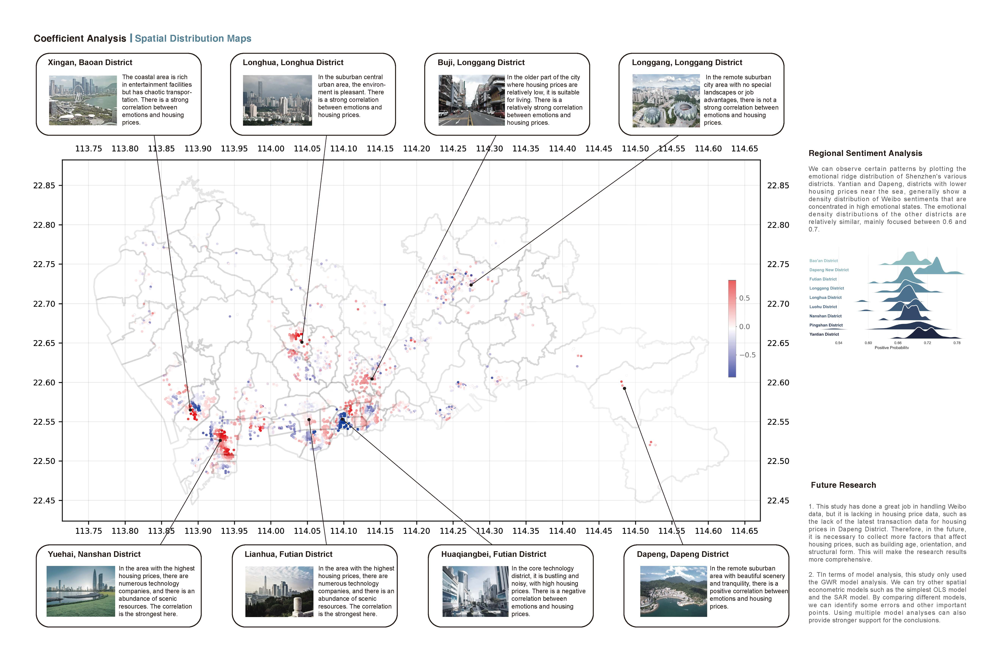

深圳房价与微博情绪关系研究
研究成果展示
与MIT学者合作，通过分析50万+微博数据和2万条房产交易数据，构建了情绪与房价关系的预测模型。

研究项目概述与背景介绍

Bi-LSTM模型与情绪分析方法

深圳各区域情绪与房价相关性分析

数据处理框架与POI分类

地理加权回归模型分析结果
核心发现
- • 公众情绪可作为房价波动的先行指标
- • 负面情绪峰值通常领先房价下跌2-3个月
- • 构建的GWR模型预测准确率达到78%
- • 为房地产市场风险预警提供了新的数据维度